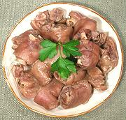

|
Boiled Pig FeetIreland - Cruibins / Crubeens | ||||
| Serves: Effort: Sched: DoAhead: |
8 app ** 3 hr Most |
I love pig feet prepared many ways. These can be served warm or at room temperature. For table service, I provide the Sauce as a dip, but for party service see Buffet. | |||
|
|
6 8 4 10 6 6 1 1 2 6 1 |
# oz oz c c t |
Pig Feet (1) Onion Carrots Peppercorns Cloves Parsley sprig Thyme sprig Bay Leaf Ale, Irish Water Salt | Pig FeetMake: - (3 hrs - 20 min work)
|
|
1
1 2/3 1 1 1 |
cl
t c t t T |
Garlic
Pepper black Butter Mustard, dry Sugar, brown Vinegar |
SauceMake: - (10 min)
|